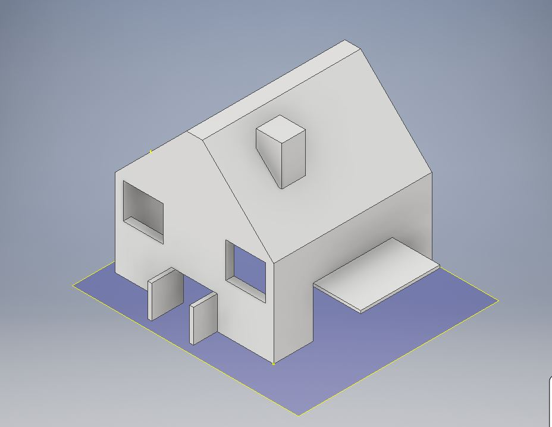
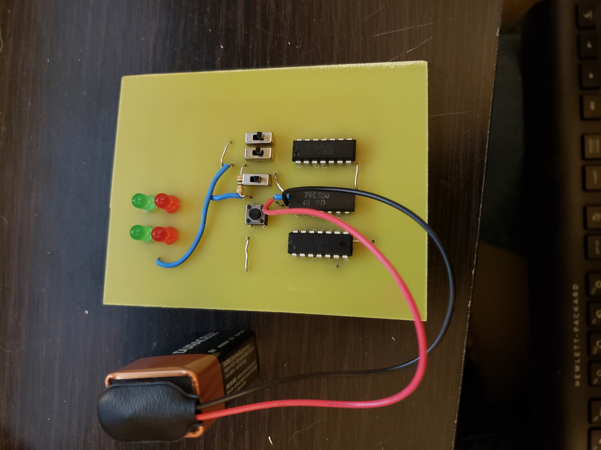
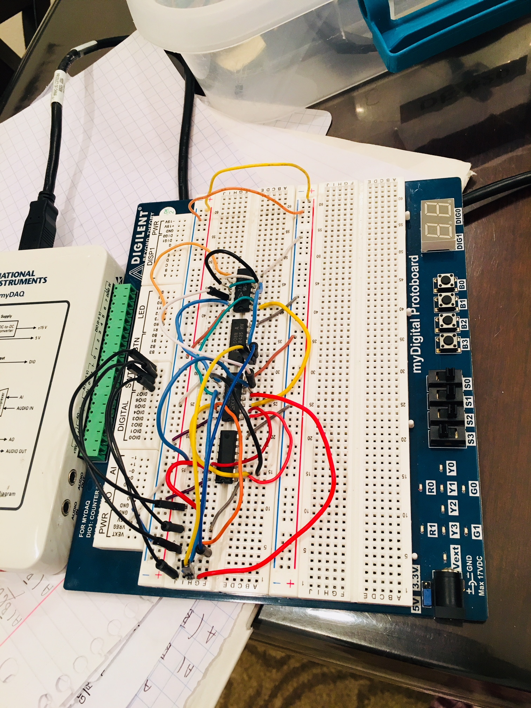
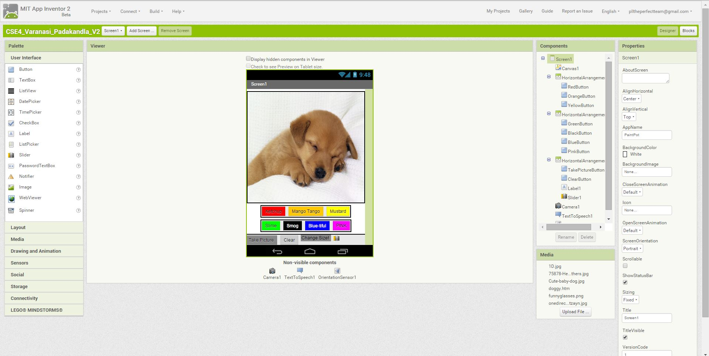
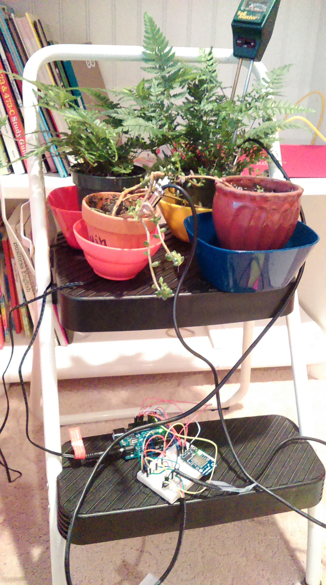
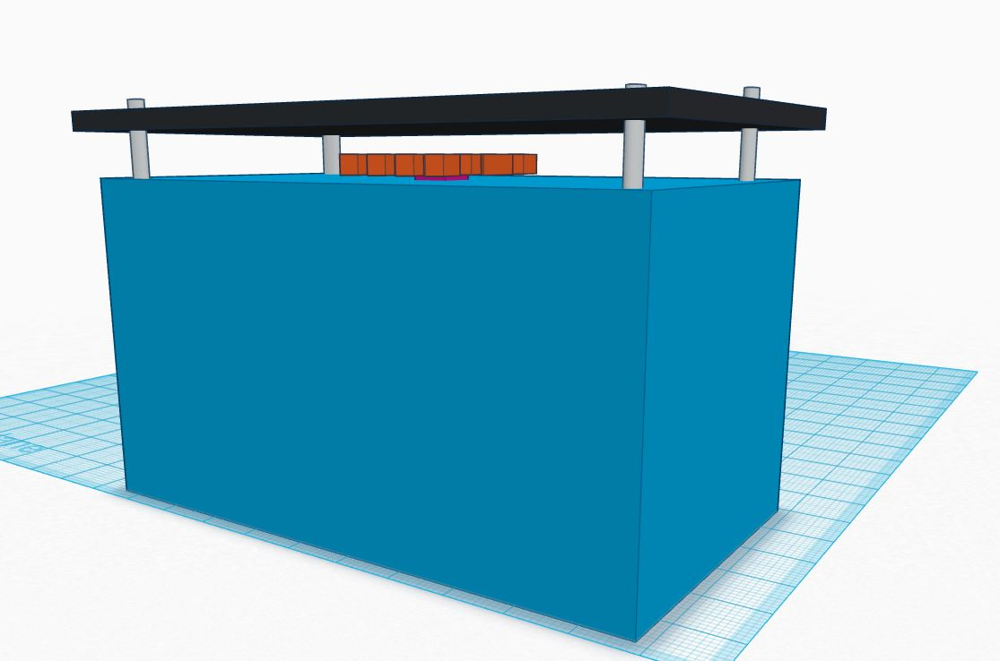
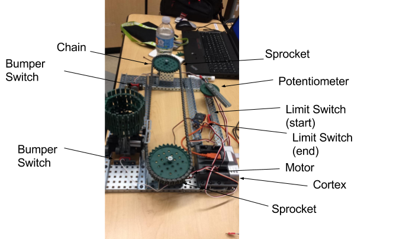
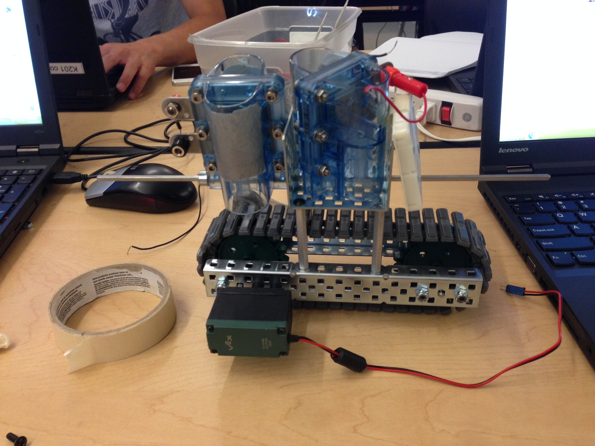

Our project objective is to design a business card using Coreldraw, and create business card by applying laser cut technology on approved material of our choice. For my business card product, I chose to use a green piece of acrylic. In this project, I gained better experience with CorelDraw. I learned how to create more complicated designs and utilize advanced features I did not know how to use before. In addition, I also became comfortable with laser cutting different materials. But prior to laser cutting the material, we prototyped our designs on a matt board.Overall, I enjoyed crafting the business card design and creating the final product with the iterative approach. (click the image for the project documentation)
In this project, we utilized AutoDesk in order to create a design to 3D print. We began by drawing a sketch in our notebooks to define what we wanted to build. After finalizing our sketch, we began simulating it on AutoDesk. We were given the maximum volume 1 in3.With the maximum dimensions of 6” X 6” X 4”. After simulating our design of autodesk, we have determined the orientation and inserted it into the package. It took about 9 hours for our model to print.I printed a model of a house with an open front and garage door. I derived my model using AutoDesk and by 3D printing it. In the future, I would like to design a more complex model. When we started this project, I was still gaining familiarity with AutoDesk and learning how to model a simple object using the software. However, eventually through the course of the project, I gained a better understanding of AutoDesk and its features. I am now able to design and simulate more complex models, and also apply advanced features of AutoDesk product. (click the image for the project documentation)
In this Entrepreneur Project,we have created an innovative product idea that will solve an exsisting problem in society utilizing the skills we have learned in our engineering curriculum. My group and I decided to create a solution to minimize gun violence. Our idea is a safe gun called Clark PT that will enforce lights to indicate that someone is armed, enforces fingerprint to authenticate so that the owner is the only person using the gun, and uses GPS microchip that will ensure that the gun cannot be used within a certain radius of designated areas. We are calling our gun Clark PT in honor of Stephon Clark who was killed on a false assumptions that he was armed. Clark was shot as he was removing his phone from his pocket. The distinctive lights on the gun will help everyone determine if someone is carrying a firearm or not. The idea was simulated through a PCB and breadboard. I managed many tasks during this entrepreneurship endeavor that dealt with marketing analysis, research,product design, and implementing PCB. I did extensive research on prior solutions in order to differentiate our product from the earlier inventions. Through this in-depth analysis, I was able to position our product to the target audiences, and also create competitive differentiation. With this knowledge, I assisted in creating a compelling value proposition for our product. To create a marketable product, I also helped to make a compelling presentation for our audience. I was also involved in the etching and soldering process of the PCB. In addition, I reviewed and edited the document in order to make it more refined. This project gave me an opportunities to enhance my practical skills in product strategy, product development and marketing strategy. In addition, I also was able to gain a better insight on the PCB manafacturing process. (Click the image above to learn more!)
Project Rubric Link
Project Procedure Link
The purpose of this project is to create a marketable circuit prototype utilizing AOI logic and our breadboaring skills. I decided to prototype a circuit which would be beneficial in a manufacturing environment. Initially, I have started working on a project with huge technical scope that would not be feasible in the time given. So, I revised my idea and created an digital alert system. In this project, I utilized my breadboarding and algebraic skills in order to design and implement circuit. I utilized my organized and diligent planning methods to design and implement my circuit on time and on schedule. In factory environment end state, the circuit receives numeric inputs as binary digits by the virtue of other electronic circuits and generates a alert if supplied numerical input is greater than the specified threshold on the other input. Some of the applications of these digital circuit include quality assurance and assessment of plant risk factors. The digital circuit prototype is successfully validated to support the objective of creating a visual user alert, if the numeric value supplied on input 1 binary ports is greater than a designated threshold on input 2 binary ports. Our prototype has 4 input sensors, first 2 input sensors (A, B) represented first numerical value and next 2 input sensors (C,D) represented second numerical value. Also, in this prototype the two numerical values are inputted manually to demonstrate the circuit behavior. However, in an implementation client environment, designated sensors periodically supply the digital inputs to the circuit. Furthermore, IOT technologies can automate this output signal to remote monitoring centers and analytical systems. Also, to minimize the cost of this prototype, the demo product is designed with 4 binary inputs and 1 output. However, the logic of this digital circuit can be extended to compare higher order numerical values by extending number of binary inputs. A combination of n binary inputs are required to represent range of numeric values from o to 2n- 1. (click the image for the project documentation)
Project Rubric Link
Project Procedure Link
The objective of this project was to modify and add new features to a drawing app called Paint Pot. We were able to built the bare minimum through tutorials provided by the MIT App Inventor website. Paint Pot is a drawing app where you can draw on pictures from your album or pictures you take at the moment. My partner and I first added different color buttons and line sizes so the user could experiment with the colors and line sizes. But while adding the camera feature my partner and I encountered a problem. In the tablets provided by our school, the camera function did not work so we enabled our camera function for some time. But ended up bringing our own device for the camera feature to work. Another problem we encountered was that if the user attempted to use the app horizontally, the user could not use any of the buttons. We attempted to fix this glitch hoping it was a mistake in the code but sadly it was not,in order to fix the problem we just enabled the option to use the app horizontally. As a fun feature we decided to have the app say the names of each color, every time that color was pressed. For example, if the user pressed the color blue, the color would be set outloud. In this project, I was able to explore my interest in computer science and programming, I was able to learn more about drag/drop coding and creating apps.Overall my role in this project was to help with the code alongside my partner,to do the project log and test out the code every time something was added. Click on the picture above to see our project log for this project.
Studies have found that agricultural and residential related plant species are consuming up to 60% of water share. So this domain is key topic of my project as it presents a huge opportunity for significant water savings. Using arduino uno, CC3000, a breadboard,jump wires and a sensirion soil moisture sensor, we collect the humidity and temperature of each plant and send the data to carriots cloud platform. In order to modify the code provided by the Adafruit Company, I connected two Sensirion soil sensors to one breadboard and arduino uno and modified the code to match the new system. In this experiment, I am testing to see if using the soil sensor will save water and help resolve the drought. The experimental group consists of two pea plants(Min) and two bonsai plants(Max) and for the control group I used the same plants, but I did not measure the amount of water using the sensors ,unlike the experimental group. Every Time the humidity drops below 80%, the owner gets an alert through his/her Carriot's account.The sensor collects the data and sends it the cloud every 15 minutes. At times, the data gets delayed due to slow internet connection. The sensor is able to send the data due to the CC3000 wifi chip which is soldered to pins on the breadboard. In this experiment, I was able to save 50%of water between the control and experimental minimum/maximum plants.I was able to take away many important lessons and new skills from this project. I learned how to use the computer language C,but I am still not fluent in this language. In order to make sense of the code I had to use my knowledge from python. I also gained familiarity with using the arduino uno , breadboad and the CC3000 wifi chip.In conclusion, through this experiment I was able to prove that the minimax theory is efficient and can save significant amount of water on a larger scale. If you would like to see the report I wrote regarding this project click on the picture above, the link includes graphs,data statistics and much more.
My partner and I created a solution to food wastage in third world countries, who lack electricity. The product was constructed using cheap and affordable items like a peltier cooler, heatsink,solar panels, and cooler. There are many competitive product on the market, but those product cost from 600 - 1200 US dollars. We constructed this product for third world countries, who are willing to buy this product in bulk for cheap prices. For the market positioning, I created an interactive website that lets buyers contact us. We designed the prototype using a website called Tinkercad. Tinkercad allowed us to design a precise and to scale model of the fridge. My partner and I collaborating very well together, since we depended on each other for information. We both have a particular set of skills, which allowed us to finish the design and website easily. Through this project, I was able to improve upon my HTML skills and design skills. I learned how to add animation to my site, animation allowed the website to be eye catching and interactive. If you would like to view our website, go to the link below. In addition, if you also want to see the rubric click the link below the website link. Since my partner and I had no experience in 3D designing, we used a website called Tinkercad. I also learned how to design my images without the use of physically drawing it out. Our challenges were mainly in programming. We both challenged in programming the website to be interactive, we had to modify and clone a lot of code to make it work. Along with programming issues , we had to learn how to use Tinkercad and improvise with the given design objects. Each of us took initiative for the programming and design section of the project. My partner, Aanya Varanasi is the designer, while I am CIO of the product.Eventually, we hope to expand this product for medical use and other domestic uses. Click on the picture for more details on the project.
Our goal in this project was to construct a vehicle that could drive in a straight line back and forth while being controlled by a potentiometer. This vehicle will deliever parts efficently. The machine will have both an emergency shut off and on switch. This project was performed to solve the problem of delievering products by hand. To create a functioning prototype, we coded a program using a C-based Textual Programming Language. After testing both the program and machine, we were able to pinpoint certain modifications necessary for a better machine. Our first problem was the vehicle tilting off the track and not hitting the bumper switch(which stops the cart). To solve this problem we implemented one more bracket into vehicle. Adding another brack prevents the chain from curving each stopping the vehicle from tilting and it hits the bump switch. We also implemented 1/2 inch standoffs which increased the accuracy by allowing the vehicle to hit the bump switch more often. T hese standoffs also assist with the accuracy of the direction. Another issue was the amount of product we could carry in our vehicle. To eliminate this issue, we added a Tank Tread Container on the top of the vehicle. This modification keeps the object from falling off and allows higher speeds. To overcome these issues , we as a team spent time brainstorming and suggesting different solutions for the issues present, we eventually were able to solve the problem through compromisng and collaboration. I managed the documentation portion of the project and assisted with the brainstorming/building of the prototype. I planned out and set the team's deadlines to ensure we were focused and efficient. This project challenged our programming and design skills. We had to create efficient solutions for design problems as a team. We each had our ideas, but we were able to compromise in the end. In terms of programming, we had to create specific code tailored to our machine with no issues and errors. Overall, through this project I was able to improve my problem solving and design skills. To learn more about this project click on the picture or the links below.
Project Documentation Link
Project Rubric Link
Project Procedures Link
Our Solar Hydrogen Vehicle has 3 wheels; two in the back and one in the front. Using fewer wheels decreases weight, making it easier for the motor to drive the vehicle. The motor is mounted on one side of the vehicle, and the driven axle is chained to the rear axle using a chain and sprocket system with a gear ratio of 13. A low gear ratio increases speed, allowing the car to have a greater linear velocity and move faster. We have a winch bracket connecting the two c-channels that form the chassis. This bracket can be used to mount solar panels or fuel cells. After we had finished constructing our vehicle, we moved on to testing different renewable or inexhaustible power sources. Over the course of a week, our group tested four different power configurations to drive our vehicle: 1 solar cell, 2 solar cells in parallel, 1 hydrogen fuel cell, and 2 hydrogen fuel cells in series. We determined the force exerted by the vehicle by attaching a string from the vehicle through a pulley to a scale, then running the vehicle as far as possible. We recorded the time required for our vehicle to travel from one marked point to another, which spanned a distance of one metre. If this configuration were to be applied to a vehicle for production, we recommend that many more hydrogen fuel cells be added to the series. This would provide more power that is required for a real vehicle. Since the process of electrolysis requires a sizeable amount of electrical energy, we would suggest that solar panels be used to charge the hydrogen fuel cells. This project has allowed to me to learn how to use solar panels and hydrogyn cells. I more well-versed in different mediums due to this project.Click the image above for my documentation!
Project Documentation Link